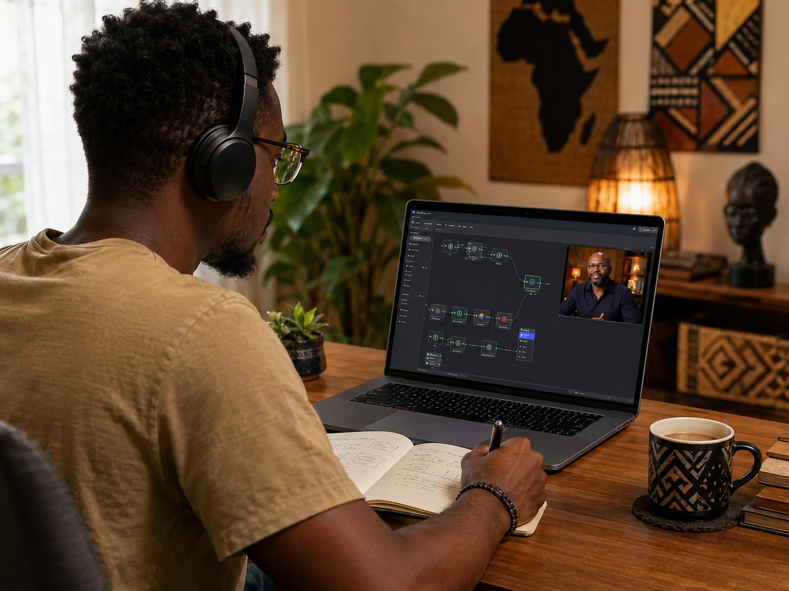

n8n Foundations is a hands-on builder cohort, not a watch-and-nod course. You'll install n8n, build a working workflow every single Saturday, and leave each session with a portfolio artifact you actually made: exported JSON, screenshots, and a README. Eight weeks in, you will have a starter portfolio and the skills to keep building on your own.
This is for people who want to build, not spectate. Come ready to work and you will have receipts to show for it.
By the end, the goal is not just that you attended. The goal is that you can point to proof of work and explain what you built.
By Week 5, you should be able to build a simple API-powered workflow: trigger it manually, pull data from a free public API, clean or route the response, and send the result somewhere useful.
It will not be enterprise-grade yet, but it will be real. You will export the workflow, screenshot the result, and write a short explanation of what it does.

Every session ends with a portfolio artifact.
This is not a watch-and-nod training. We learn by doing, and every Saturday session has a build assignment that should leave behind proof of work.
Participants should maintain a GitHub repository or organized portfolio folder from the beginning. Attendance alone is not enough; the Certificate of Completion depends on assignment completion and portfolio evidence.
This is a build plan, not a lecture syllabus. The exact outline may be adjusted as cohort needs become clearer.
Build and publish your first n8n portfolio artifact.
Portfolio pieceGitHub portfolio repo created, first README added, screenshot of local n8n or n8n Cloud running, and exported "Hello Automation" workflow JSON.
Build a trigger-based workflow.
Portfolio pieceA simple manual or scheduled trigger workflow, exported JSON file, screenshot, and short README explanation.
Move and transform data between nodes.
Portfolio pieceA data transformation workflow showing input, processing, and output, with before/after screenshots and notes.
Add conditions and branching logic.
Portfolio pieceA decision-based workflow that routes data based on conditions, with exported JSON and a written explanation of the logic.
Use HTTP requests and a beginner-friendly API.
Portfolio pieceAn API-powered workflow using a free or public API, exported workflow JSON, screenshot, and short case-study write-up.
Use credentials safely and understand access boundaries.
Portfolio pieceA workflow using a safe credentialed service or mock credential pattern, plus a short security note explaining what should and should not be shared.
Test, troubleshoot, and document a workflow.
Portfolio pieceA broken-to-fixed workflow, troubleshooting log, test checklist, and handoff notes.
Complete a beginner final project.
Portfolio pieceA complete beginner portfolio project with workflow JSON, screenshots, README, use case explanation, and demo notes.
I am not building this as a casual webinar series. I am building it because too many people are interested in AI automation but never move from watching content to building proof.
Ghana and the broader automation community need more people who can build, test, document, explain, and improve real workflows. This pathway is designed to help serious beginners start that journey with structure.
This cohort is free, but it is not passive. You do not need to be advanced, but you do need to participate.
You will be expected to build, submit assignments, and keep evidence of your work. The standards are here to protect the quality of the cohort and help serious learners make real progress.
Attendance alone is not enough. This is a Certificate of Completion, not an official n8n credential.
Portfolio completion does not guarantee paid work, client assignments, employment, or builder pool acceptance. There is no guarantee of future assignment opportunities.
Completing the beginner cohort does not make someone a professional automation builder.
It gives the foundation needed to continue into intermediate, advanced, and use-case cohorts. The full pathway is what prepares someone to be considered for more serious work.
Registration is not open yet. Join the interest list when it opens and you will be notified first about the cohort schedule, setup pre-session, requirements, and registration link. Joining the interest list does not reserve a seat, but it tells us you want to be part of the first builder cohort.